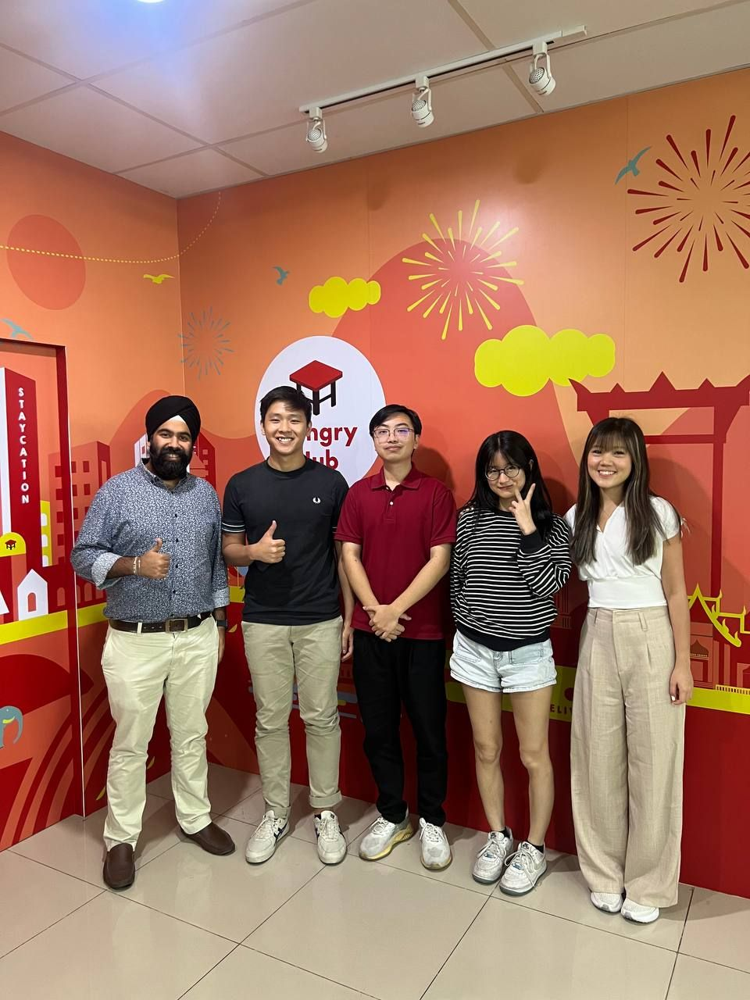
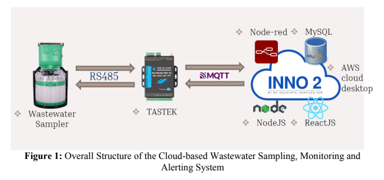
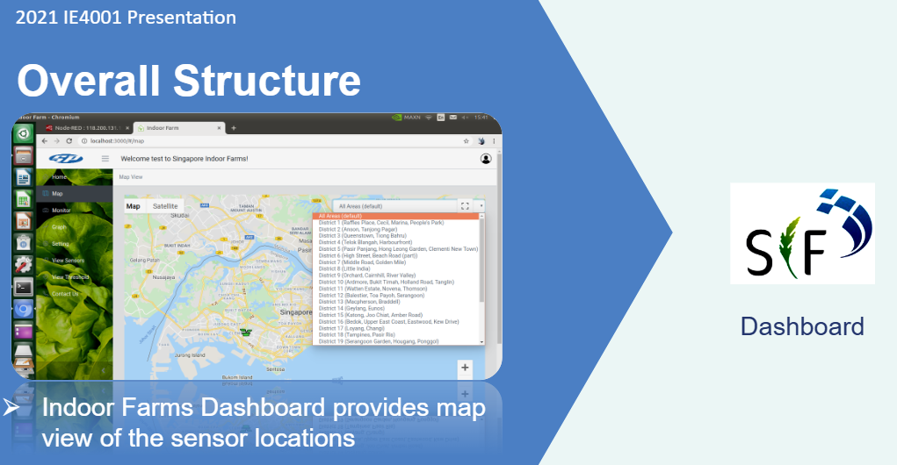

Project Internships & Work Experiences
Cybersecurity Analyst – Hungry Hub (AppServation Co., Ltd.), Bangkok, Thailand

May 2024 – Aug 2024
During my tenure as a Cybersecurity Analyst at Hungry Hub, I played a key role in enhancing the organization’s security posture by automating security workflows, improving vulnerability management, and streamlining incident response processes. My contributions included:
🔹 Automated Security Scanning & Vulnerability Management
Implemented OWASP ZAP, GitHub Actions, and SonarQube to automate security scans for web applications and APIs.
Reduced vulnerability resolution time by 30% by integrating security checks directly into the CI/CD pipeline.
Ensured early detection of security flaws, minimizing risks before deployment.
🔹 Cloud Security & Incident Response Optimization
Designed and deployed AWS Lambda workflows to process security alerts efficiently.
Integrated AWS API Gateway to enable real-time event-driven security monitoring.
Improved incident response efficiency by reducing manual investigation time and automating alert categorization.
🔹 Scripting & Process Automation
Developed Python and Shell scripts to automate repetitive security tasks, such as log analysis and report generation.
Achieved a 10+ hours/month time savings for the security team, allowing them to focus on high-priority threats.
This role reinforced my expertise in application security, cloud security, DevSecOps practices, and automation, and I am eager to bring these skills to future opportunities.
Insider Threat Risk Solution Developer – UBS AG, Singapore
Jan 2024 – Apr 2024
As an Insider Threat Risk Solution Developer at UBS AG, I worked on building cutting-edge security solutions to detect and mitigate insider threats. My contributions focused on machine learning-driven anomaly detection, high-performance microservices, and DevSecOps automation.
🔹 Machine Learning for Insider Threat Detection
Developed an anomaly detection model using TensorFlow and Scikit-learn to analyze user activity logs and identify suspicious behaviors.
Reduced false positive rates by 25%, enhancing the accuracy of insider threat detection.
Implemented advanced feature engineering techniques to extract meaningful patterns from high-volume security logs.
🔹 High-Performance Microservices Development
Designed and deployed Python/Flask microservices integrated with MySQL, capable of handling 10,000+ daily transactions while maintaining 99.9% uptime.
Optimized database queries and caching strategies to improve API response times and system reliability.
🔹 CI/CD & DevSecOps Automation
Streamlined the CI/CD pipeline using GitLab and Docker, reducing deployment times by 40%.
Ensured secure and efficient deployments by implementing automated testing and vulnerability scans in the pipeline.
This role strengthened my expertise in cybersecurity, ML-driven anomaly detection, cloud-native microservices, and DevSecOps, equipping me with the skills to tackle complex security challenges in enterprise environments.
IoT & Web Development Intern – W2 Industrial Services Hub Pte. Ltd., Singapore

Aug 2020 – Feb 2021
During my internship at W2 Industrial Services Hub, I worked on IoT cloud integration, real-time data processing, and user interface development to enhance industrial automation solutions. My key contributions included:
🔹 Cloud & IoT Integration
Integrated AWS cloud services (AWS IoT Core, Lambda, and DynamoDB) with industrial IoT hardware, ensuring 98% uptime for real-time data processing.
Developed real-time data ingestion pipelines, enabling seamless communication between edge devices and cloud-based analytics.
🔹 IoT Dashboard & UI Development
Designed and built user-friendly dashboards using React.js and Node.js, providing 50+ factory technicians with real-time operational insights.
Improved data visualization and usability, allowing technicians to monitor machine performance, predict maintenance needs, and reduce downtime.
This experience strengthened my skills in IoT systems, cloud computing, full-stack web development, and industrial automation, preparing me for future roles in smart technology solutions.
IoT & Web Development Intern – Singapore Indoor Farms Pte. Ltd., Singapore

Aug 2020 – Feb 2021
At Singapore Indoor Farms, I contributed to cloud infrastructure development, data management, and web interface design to support smart farming operations. My work focused on improving connectivity, data accuracy, and user experience for precision agriculture.
🔹 Cloud Infrastructure & IoT Integration
Built and deployed AWS-based cloud infrastructure (AWS IoT Core, Lambda, and S3) to enable seamless connectivity between IoT sensors and factory backend systems.
Ensured real-time data transmission, optimizing farm monitoring and automation processes.
🔹 Data Management & Processing
Managed large-scale agricultural datasets, implementing data cleaning and processing pipelines to ensure accuracy and reliability.
Designed automated data processing workflows, improving efficiency in farm operations and decision-making.
🔹 Web Interface Development for Indoor Farming
Developed an interactive web dashboard using React.js and Flask, allowing farm operators to visualize real-time sensor data and control environmental conditions remotely.
Enhanced user experience by designing intuitive UI components for monitoring farm performance, reducing manual intervention.
This internship strengthened my skills in IoT-cloud integration, data engineering, and full-stack web development, preparing me for future roles in smart technology solutions and industrial automation.